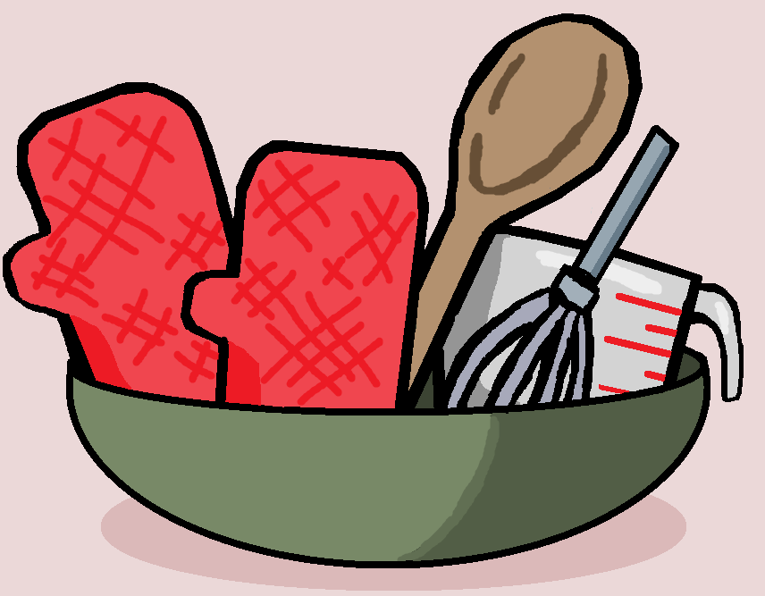

Tools & Equipment
Having the right tools prepared before baking will make the process much easier and more organized. Most of these tools are common kitchen items, and some can be substituted if needed. Since the Black Forest cake has multiple parts, including cake layers, whipped cream, cherry filling, and decoration, it helps to set up your tools before you begin. This prevents you from stopping in the middle of the recipe to search for something.

Baking Tools
You will need cake pans, mixing bowls, measuring cups, measuring spoons, and either a whisk, hand mixer, or stand mixer. Cake pans are important because they shape the cake layers and help them bake evenly. Measuring tools are also important because baking depends on accurate amounts, especially for flour, cocoa powder, sugar, and baking powder.
Assembly Tools
For assembling the cake, a spatula, spoon, and flat surface or cake plate will be useful. A spatula helps spread the whipped cream evenly between layers, while a cake plate gives the cake a stable base. If you have a cooling rack, use it to cool the cake layers before assembling because warm cake can melt the cream.
Helpful Substitutions
If you do not have a stand mixer, a hand mixer or whisk can still work, although whipping cream by hand may take longer. If you do not have a cake turntable, you can still decorate the cake on a regular plate. The most important thing is to make sure your tools are clean, dry, and ready before you start.